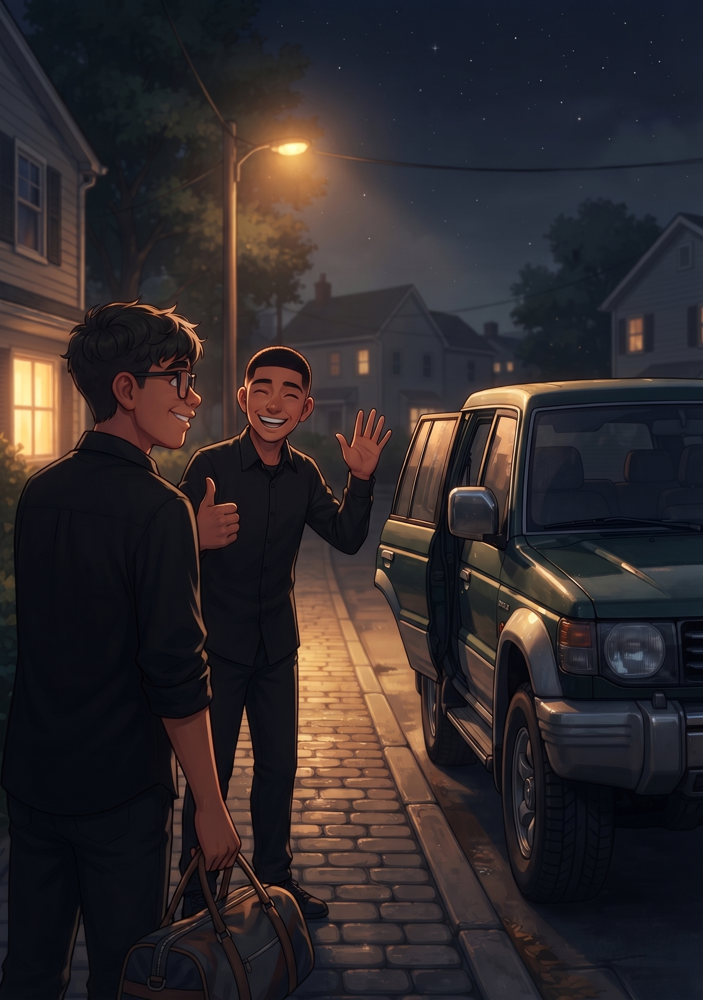

Brandy se quedo un rato más en la casa de Tomás para terminar de hacer el trabajo, cuando lo terminaron quedo tan genial que querian llorar de lo hermoso que quedo, ellos le mandaron un video a Santi porque el ya se habia ido, cuando Santi lo vio quedo sorprendido y dijo que era una obra de arte que estaba muy bonito, cuando terminaron Brandy y Tomás jugaron un rato cuphead porque son unos vagos, en lo que estaban jugando Brandy llamo a su hermana para que lo fuera a recoger entonces Brandy solo estuvo un ratito donde Tomás y ya despuésllego la hermana por él, Brandy se despidio de todos y le agradecio mucho a la mamá de Tomás por el cafe, Brandy de camino a la casa se puso a reflexionar de que tiene unos buenos amigos y que valen mucho. Al día siguiente presentaron el trabajo y no ganaron pero si obtuvieron puntos extras para el examen, la mini grua al final se termino dañando pero fue una experiencia bonita.
